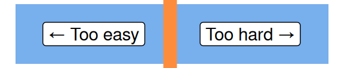

Excel formatting
excel
beginner
Excel for beginners
This session is part of our Excel for beginners course. That’s a series of six linked sessions, delivered on Teams, that give an introduction to Excel for people working in health and social care. The sessions are:
- Excel first steps
- Tidy data in Excel
- References and names in Excel
- Excel formatting (this session)
- Excel tables
- Excel formulas
Together, they aim to help you develop an appropriate set of Excel skills to help your work. This session covers formatting in Excel:

- for this session, you’ll need to be familiar with the Excel basics (getting around in Excel, opening/saving/closing files)
- you’ll also need to be familiar with A1 referencing, values, and tables
- we’re going to avoid talking about formulas as much as possible today
Previous attendees have said…
- 83 previous attendees have left feedback
- 98% would recommend this session to a colleague
- 96% said that this session was pitched correctly

Three random comments from previous attendees
- It was a useful session, covering the basics of formatting in excel and highlighting some potential pitfalls. It’s also helped me realise that I am much more advanced (at least in some areas of excel) than I’d previously thought. A good introduction to formatting for those that are either relatively new to excel or formatting.
- very useful - picked up some tips
- I don’t know much about excel and was unsure what level of course to attend. I picked up a couple of basic tips. Attending this session was helpful for me to know what level of course to attend in future.
Session materials
- all materials
- slides
html / pdf
Session outline
(thanks Deborah Calvin, Brian Orpin, Michael Roarty, Kenneth Mack, Catherine McGrenera, June Livey, Catriona Scott)
- accessibility
- formatting cells
- formatting values (aka number formatting)
- formatting vs other things
- shortcuts and tips
- an introduction to conditional formatting
Accessibility
- many of us will have legal duties to make parts of our services accessible
- there are useful standards for making sense of accessibility
Excel is a mixed bag for accessibility
- it is easy to make non-accessible documents in Excel
- merged and split cells
- inconsistent use of tables
- poor column headings, sheet names, etc
- unlabelled charts
- low-contrast themes
- meaning conveyed by colour and fonts
- there is a built-in accessibility checker in some versions of Excel, which you might find useful
Formatting cells
- please create a new Excel workbook
- you can format each cell individually via the right click menu and
Format cells(or by theCtrl+1shortcut)
Format cells dialogue

- you can fill cells with custom fonts, alignments, colours, patterns, and gradients (via
Fill Effects...) - you can add borders to individual cells
Formatting many cells
- this is fine for a few cells, but gets boring (and inconsistent) if you have lots of styling to do
- you can select several cells, and access the
Format cells dialogueto style them together - or you can select a cell with a theme you want to copy, and use the
Format Paintertool to spread that format about the place

Theming
- you can also theme your whole workbook

- take care, though, as many of these themes are not accessible and often produce hard-to-read results
- and lots of ugly clunky stuff to find (e.g. default font changes)
- on balance, better to avoid themes unless you’re certain they’ll be of benefit for you
Help! I hate my formatting!
Clear>Clear Formats(orAlt,H,E,F)
- note this doesn’t clear out all the formatting from themes - especially odd fonts etc
- also worth having the
Paste as Valuestrick in your back pocket for when things go horribly wrong

Number formatting
- number formatting is taking a value, and changing its meaning with formatting
- number formatting is how dates work (or fail to work) in Excel
- dates are v. important, so we’ll concentrate on them in this part of the session
- you’ll also encounter number formatting when working with…
- money
- percentages
- decimal places
- …
Date formatting
- we’ll take a number, and apply special formatting to it to make it look like a date
- so
45483will become10/07/2024
- so
- Excel dates are stored as the number of days since Jan 1st 1900
- you can prove this to yourself by typing
1into a cell, then formatting it as a date using the number formatting menu:
- you can also format as a date via the Format Cells dialogue (
Ctrl+1)
Don’t try and cheat with dates!
- date formatting is one of the commonest pain points in Excel
- dates are extremely complicated, and we often want to calculate with them
- the advice is simple: dates should always be stored as these numbers, and then formatted to look like dates
- don’t try to cheat by writing dates as text
- use formatting to produce your preferred date format in the Format Cells tools instead

Formatting vs other things
(or, keep your sheets clean)
- it’s common to see Excel sheets that contain lots of extraneous bits
- headers, copyright info, explanations…
- ideally, all this extra stuff should be kept well away from your data, as it makes it harder to process that data safely
- …and you should definitely be using tables to help with this
Conditional formatting
- this can get complicated, and we’ll revisit more fancy conditional formatting in the intermediate training sessions
- the big idea is that conditional formatting alters the format as values change
Progress bars
Put a few random numbers in a column

Select them, and go to the Conditional Formatting menu

Select Data Bars

Duplicate values
- Now clear that conditional formatting

- Add a duplicate value to your numbers

Duplicate values
- Highlight duplicate values

Red-Amber-Green reporting
- RAG reporting with icon sets

Key shortcuts
Ctrl+1for the Format Cells dialogueAlt,H,E,Fto clear formatsCtrl+v,Ctrl,vto paste values only
Formatting tips
- Accessibility is much more important than beauty
- Use number formatting for dates, currency, percentages
- Consider using validation to make sure that cells only contain what you expect them to contain
- Consider locking cells to protect formatting when that formatting is really important
- Use conditional formatting sparingly